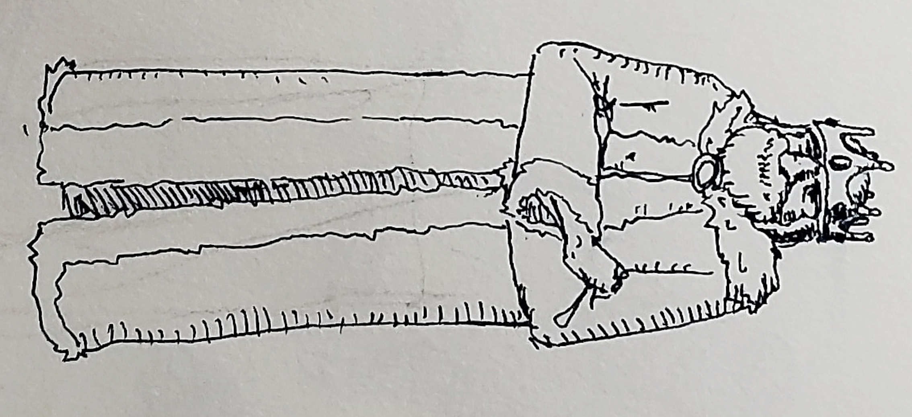

The Dark Realm of Dreigoth Wiki
Wraithward
Wraithward is the capital of the Bánhelm Empire and a heavily fortified city just north of the Mörkskog woods. It was established on the second year of the Second Age and was the first human settlement in Brytengol.

King Beodill IV
King Beodill IV The well respected and proud ruler of the Bánhelm Empire. Rules from a massive tower in the center of Wraithward and has complete and utter control of the empire. He's rarely seen out of his castle, and never without a entourage of guards at his side.
Adventurer's Guild Leaders